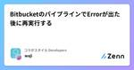
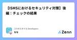
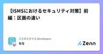
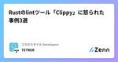
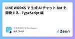

コラボスタイル Developersのフィード
https://zenn.dev/p/collabostyle
私達は『ワークスタイルの未来を切り拓く』という理念のもとワークフローの本質を追求し、新しいワークスタイルを提案するとともに、コラボスタイルが率先して時代に適したワークスタイルを常にバージョンアップし発信していきます。
フィード
SAN 付きの自己署名証明書を作る
コラボスタイル Developersのフィード
アプリ開発の序盤から認証関連を扱う事が多く、https なアクセス要件を満たす必要があります。そのためには TLS サーバーの起動準備が必要ですが、その前の準備として電子証明書が必要です。API サーバーと Web サーバーは別ドメインで運用するから、サードパーティー扱いでブラウザーのセキュリティ云々と付帯事項が色々ありますが、手間は減らしたいので1つにまとめた電子証明書を作ります。 今回の対象のドメイン以下のように 2 つの完全なドメイン名 (FQDN) とワイルドカードサブドメインに対応した自己署名証明書、いわゆるオレオレ証明書を OpenSSL で作る方法です。loca...
2日前
EC2 自動起動・停止を Step Functions で運用する
コラボスタイル Developersのフィード
AWS Lambda や自前のプログラムを一切書かずに、ノーコードで EC2 インスタンスを指定した時刻で起動したり停止する運用をします。AWS のサービスごとの仕様や操作に慣れが必要ですが、代わりにランタイム更新の手間が無く長期運用するには打ってつけです。記事は EC2 での作成例ですが、RDS など他のサービスへも応用ができます。 使うサービス大まかに以下の3つを使います。全て AWS コンソール画面から行います。Step Functions / ステートマシンEC2 検索と実際の操作を担当します。Event Bridge Scheduler定期実行でステ...
3日前
【はじめてのカスタマーサポート】1質問＝1回答を意識せよ
コラボスタイル Developersのフィード
こんにちは🐸わたしは社内SEとして日々業務改善のｱﾚｺﾚに従事させていただいているのですが、実は、自社製品をご利用いただいているお客様向けに、技術的な製品サポート対応もおこなっています。データを見ないと分からないことサポートサイトの記事に掲載されている内容で、解決できないことざっくりですが、↑上記の対応を主におこなっています。個人的にサポート対応は自分なりにこだわりを持っておこなっているため、自分への振り返りも兼ねて色々書いていきたいと思います😎製品サポートを初めて利用しようと思ってるけど、どんな風に質問書いたらいいかな自分もサポート対応をしているけど、他の人はど...
3日前

BitbucketのパイプラインでErrorが出た後に再実行する
コラボスタイル Developersのフィード
はじめにBitbucketのPipelineでビルドエラーが発生した後に、再実行するための方法について記述します。ビルドに失敗（Failed）した場合は、「Rerun」ボタンが表示されるためそこから再実行をかければよいのですが、Errorの場合は「Rerun」ボタンが表示されません。 Failedの場合 Errorの場合 Error後の再実行パイプライン画面の右上にある「Run pipeline」をクリックします。ダイアログが表示されるので、対象のブランチを選択後に「Run」をクリックすると再実行がされます。 ステータスサイトを確認してみるエラーが発生...
4日前

【ISMSにおけるセキュリティ対策】後編：チェックの結果
コラボスタイル Developersのフィード
先日、自社の情報管理区域をチェックしてきました🚓その時に感じたことなどをレポ含めて書いていきます。この記事を通して 「情報セキュリティ」は物理でも対策が必要だぜ ってことが伝わればいいなと思っております。!この記事は「後編」です。前編を読んでない方は、そちらを先に読んでみるとおもろいかもしれません。https://zenn.dev/collabostyle/articles/a93eca1864547b 管理区画をチェックした時に意識したこと主に以下を確認しました。ロックできる棚は、施錠・管理されているかドアは子扉含め、施錠・管理されているか机の上や棚に機密...
4日前

【ISMSにおけるセキュリティ対策】前編：区画の違い 1
1
コラボスタイル Developersのフィード
先日、自社の情報管理区域をチェックしてきました🚓その時に感じたことなどをレポ含めて書いていきます。（2回に分けて書くよ）この記事を通して 「情報セキュリティ」は物理でも対策が必要だぜ ってことが伝わればいいなと思っております。 前提：自社の勤務形態についてコラボスタイルは、個人のライフスタイルに応じて「在宅勤務」と「会社勤務」を自由に選択できるハイブリットワークを採用しています。そのため、基本的にオフィスはフリーアドレス形式となり、会社の中で「自分の席」を持たず、来た人が好きな席を利用することが可能です🐾こんな感じ 一般区画とはこの「誰でも好きな席を使える」場所は...
5日前
Rust 基本文法 - From、TryFrom -
コラボスタイル Developersのフィード
はじめにRust を使っていく中で、From、TryFrom を実装する機会がありました。初見ではなんのこっちゃ理解できなかったので、同じく躓く方もいらっしゃるのではないでしょうか。コードは Rust Playground でも試すことができますので、もし宜しければ手を動かしてみてください。https://play.rust-lang.org/ From についてFromでは、Aの型をBの型に変換することが可能です。以下の例のように struct Number で impl From<T> for Tを実装します。※Rust 公式ドキュメントからの引用で...
7日前
Hono + Drizzle + Cloudflare D1の構成を試してみた 1
コラボスタイル Developersのフィード
HonoとDrizzleを使ってCloudflare D1にアクセスする構成を試してみました。この記事では、マイグレーションからデプロイまでの手順を共有します。 手順 プロジェクトの作成npm create hono@latest hono-drizzle今回はcloudflare-pagesを選択します。 インストールDrizzleのパッケージをインストールします。npm i drizzle-ormnpm i -D drizzle-kitバリデータとしてZodとZodのプラグインをインストールします。npm i zod @hono/zod-validator...
7日前

Rustのlintツール「Clippy」に怒られた事例3選
コラボスタイル Developersのフィード
はじめにClippyは、Rustの開発を支援する静的解析ツールです。コードの冗長性やパフォーマンス、潜在的な問題を検出し、修正を提案してくれます。初学のため指摘された解析ルールと、修正前後のコード例を3つご紹介します。 インストールと実行方法Clippyをインストールします。$ rustup component add clippyCargoプロジェクトでlintを実行します。$ cargo clippy 解析ルールと修正例 【1】redundant_field_names構造体を作成する際、フィールド名と値にセットする変数名が同じ場合、記述を省略...
8日前

LINE WORKS で 生成 AI チャット Bot を開発する - TypeScript 編
コラボスタイル Developersのフィード
Anthropic Claude 3 がリリースされた！Claude 3 がリリースされて、大きな反響を呼んでします。GPT-4 の性能を上回るとも言われており、日本語での精度も高い特徴が挙げられています。https://www.anthropic.com/news/claude-3-family 参考記事GPT-4を上回るAIチャット「Claude 3」向けの公式プロンプト集が無料公開 - 窓の杜Anthropicが生成AIモデル"Claude 3"を発表、"Opus"モデルとその人間に近い能力へ注目集まる - InfoQ LINE WORKS と Claud...
8日前

HTMXとRustを組み合わせて遊んでみた
コラボスタイル Developersのフィード
なにやら少し話題になっていたHTMXが気になっていたので、触ってみました。https://risingstars.js.org/2023/en#section-framework基本的なことは公式リファレンスにまとまっているので、今回はRustとHTMXを利用してカウンターのWebアプリを作成してみました。 HTMXとは？htmx gives you access to AJAX, CSS Transitions, WebSockets and Server Sent Events directly in HTML, using attributes, so you can...
1ヶ月前
HonoをCloudfrareにデプロイしてみる
コラボスタイル Developersのフィード
Honoを初めて触りました。設定が少なく、プロジェクトの作成からデプロイまでのステップも少なく、ビルドまでが楽でした。これだけで、全世界のCDNエッジにデプロイされるのは素晴らしいです😭今回は、初めてのHonoのアプリをデプロイするまでを書いていきます。 手順 プロジェクトの作成以下のコマンドでテンプレートを作成してみます。npm create hono@latestテンプレートが色々と選べるようですが、ひとまずcloudflare-pagesにしてみます。以下のようなテンプレートが作成されました。viteをビルドで使用するようです。wranglerはcloudf...
1ヶ月前
サーバレスSQLデータベースCloudflare D1を触ってみた
コラボスタイル Developersのフィード
サーバーレスSQLサーバーのCloudflare D1が気になったので触ってみることにしました。この記事では、Cloudflare D1の単体での基本的な操作を紹介します。 CloudflareのWebコンソールから操作する データベースを作成D1の画面を開き、「Create database」からデータベースを作成します。今回は、Cloudflareのコンソールからから作成します。作成できました。 テーブルの追加「Create table」からテーブルを作成します。スキーマの定義を行い、「create」で作成します。 カラムの追加テーブル作成後デー...
1ヶ月前
iPaaSからノーコードで画像生成AI（Activepieces＋Stability AI）
コラボスタイル Developersのフィード
はじめに今回はiPaaSの「Activepieces」と、生成AIの「Stability AI」という2つのWebサービスを使って、ノーコードでAIによる画像生成を試してみます。 ActivepiecesとはZapierやIFTTTなどのように、Webサービス間のデータ連携やタスクの自動化をおこなえます。2024年2月時点で、連携登録されているサービスは180件でした。今回は使用しませんが、ChatGPTやAzure OpenAIともノーコードで連携可能です。クラウド版では無料プランがあり、オープンソースのためオンプレミスでも利用できます。https://www.a...
1ヶ月前
目次スクロール実装に便利なReact Scroll
コラボスタイル Developersのフィード
目次をクリックしたときに、その目次に関連するアイテムのところまでスクロールする機能を実装するとき便利なReact Scrollを触ってみました。おそらく、地道に実装すると結構大変になるかと思います💦この記事では、便利なReact Scrollを紹介します。https://github.com/fisshy/react-scroll 基本的な使い方<Element name="アイテム名">タグでスクロール表示したいアイテムを囲みます。あとは、scroller.scrollTo("アイテム名")関数を実行すれば選択したアイテム名の部分までスクロールがされます😊...
1ヶ月前
Next.js App RouterでChakra UIが'use client'無しで実装できるだけだった話
コラボスタイル Developersのフィード
以前の私の記事にて以前私が出した記事で、Chakra UIが'use client'無しで使えるようになってました！と記載していました。実際に use client を実装しなくても動いていました。ただ、以下のとおり気になるコミットを見つけたので確認してみました。 実際はどうなのか結論としては、Chakra UI 自身がビルドする際に use client を付けるようになっただけのようです。。（認識違っていたらご指摘ください。。）その為、確かにuse client無しの実装で使えるようになったものの、実際はServer Componentsとして機能しているわけで...
1ヶ月前
Cloudflare Pageにhtmlをデプロイしてみる
コラボスタイル Developersのフィード
最近話題のHonoについてですが、デプロイ先はCloudflare PagesやWorkersがメインになっています。まずはそのCloudflare Pagesを知るために、単体のhtmlをデプロイしてみることにしました。この記事では、Cloudflareに単体のhtmlをデプロイする手順を書きます。デプロイの簡単さが感じられるように、スクショ多めの記事になります。 デプロイまでの手順早速htmlをデプロイしていきます!Workers & Pagesの画面でアプリケーションを作成していきます。サーバーレスファンクションのWorkersとWebサイト・フルスタック...
1ヶ月前
M5Stackを使って、透明ディスプレイにデータを出力してみた
コラボスタイル Developersのフィード
透明ディスプレイって何か憧れますよね？ということで、ロマンだけを追い求めて、透明ディスプレイを買ってみました。 利用デバイス今回利用するデバイスは以下の通りです。 M5Stack Core2 for AWShttps://www.switch-science.com/products/6784M5Stack Core2 for AWSを利用したチュートリアルが用意されており、MQTTプロトコルを利用した通信や、Amazon SageMakerを利用した機械学習に関することも少しだけ学べます。https://aws-iot-kit-docs.m5stack.com/ja...
1ヶ月前
【Tapo C200】1台のカメラで複数の箇所を定点観測してみた
コラボスタイル Developersのフィード
Tapo C200を利用して、複数の箇所を定点観測したかったため、Pythonで実装してみました。 利用機材https://www.tp-link.com/jp/smart-home/tapo/tapo-c200/ 事前準備以下のページを参考にし、RTSPライブストリーミングを利用可能な状態にしておきます。https://www.tapo.com/jp/faq/34/ 実装コードonvifを利用して、カメラの設定情報の取得や、パンチルト操作を行います。https://canon.jp/business/trend/what-is-onvifcamera.pyi...
1ヶ月前
Next.jsのJavaScrpitエラーをNewRelicで記録する方法
コラボスタイル Developersのフィード
前回の記事の続きです。クライアント側のJavaScriptのエラーを監視したかったため、実装方法を確認してみました。https://zenn.dev/collabostyle/articles/337329e62cff2f 導入手順前回の設定では足りなかったコードを追記しています。 pagesフォルダ内pagesフォルダ内にある_document.tsxと_error.tsxに対して、以下のコードを記載します。ファイルがなければ作成してください。pages/_document.tsximport newrelic from "newrelic";import D...
1ヶ月前